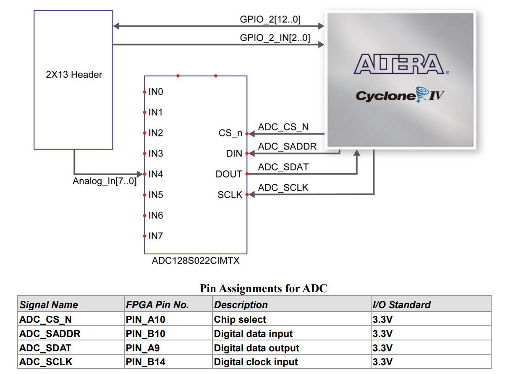
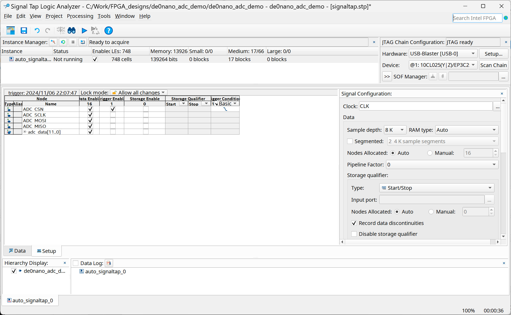

การออกแบบวงจรดิจิทัลสำหรับ FPGA เพื่ออ่านค่าจากไอซี ADC เชื่อมต่อด้วยบัส SPI#
Keywords: Digital Logic Design, VHDL, Intel / Altera FPGA, Quartus Prime, 12-bit SPI ADC, MCP3208, ADC128S022
ความรู้และทักษะพื้นฐานที่เกี่ยวข้อง
- อิเล็กทรอนิกส์ (Electronics): การสร้างวงจรแบ่งแรงดัน (Voltage Divider) ด้วยตัวต้านทานปรับค่าได้ (Trimpot) การแปลงสัญญาณแอนะล็อกเป็นดิจิทัล (ADC) การสื่อสารด้วยบัส (SPI) การเชื่อมต่อ I/O รวมถึงการศึกษาเอกสาร Datasheet ของไอซี MCP3208 และ ADC128S022
- การออกแบบวงจรลอจิก (Logic Design): การออกแบบวงจรดิจิทัล การทำงานของ I2C Master IP Core และการใช้งานชิป Cyclone IV FPGA
- การประมวลผลสัญญาณดิจิทัล: การอ่านสัญญาณอะนาล็อก การสุ่มตัวอย่างสัญญาณ และการสร้างสัญญาณ PWM
- การวัดผล (Measurement): การใช้ Signal Tap Logic Analyzer การตั้งค่า Trigger Conditions และการวัดสัญญาณด้วยออสซิลโลสโคป
- การเขียนโค้ดและการใช้ซอฟต์แวร์ (Software/Coding): การเขียนโค้ดด้วย VHDL และการใช้งาน Intel Quartus Prime (Lite Edition)
▷ การเชื่อมต่อกับไอซีประเภท ADC ด้วยบัส SPI#
ไอซี ADC (Analog Digital Converter) ทำหน้าที่แปลงสัญญาณอินพุต-แอนะล็อก ให้เป็นข้อมูลดิจิทัล และมักนิยมใช้วิธีสื่อสารข้อมูลกับอุปกรณ์อื่นด้วยบัส SPI (Serial Peripheral Interface) โดยใช้สัญญาณ 4 เส้น (4-Wire SPI) ได้แก่
- SCK (SPI Serial Clock)
- MOSI (SPI Master Out Serial In)
- MISO (SPI Master In Slave Out)
- /CS (SPI Chip Select - Active-Low)
การรับส่งข้อมูลด้วยบัส SPI จะใช้วิธีการเลื่อนบิตทีละบิต ตามจังหวะการทำงานของสัญญาณ SCK โดยใช้สัญญาณข้อมูลแบ่งเป็น 2 ทิศทาง คือ MOSI และ MISO ตามลำดับ โดยมีอุปกรณ์ตัวหนึ่งทำหน้าที่เป็น SPI Master (ชิป FPGA) และอีกอุปกรณ์หนึ่งทำหน้าที่เป็น SPI Slave (ไอซี SPI ADC)
บทความนี้นำเสนอตัวอย่างการใช้งานไอซี SPI ADC และเชื่อมต่อกับวงจรในชิป FPGA โดยเลือกใช้ไอซี 2 เบอร์ ได้แก่
- ADC128S022
ของบริษัท Texas Instruments (TI)
- จำนวนช่องอินพุต (Number of Inputs): 8
- ความละเอียดของข้อมูล (ADC resolution): 12-bit
- ประเภทของ ADC: SAR (Successive Approximation Register)
- แรงดันไฟเลี้ยง (VCC): 2.7V ~ 5.25V
- ความเร็วในการแปลงข้อมูล (Conversion Rate): 50k ~ 200k Samples/s (ขึ้นอยู่กับ VCC ที่ใช้)
- โหมดการทำงานของ SPI หรือ การตั้งค่า (CPOL,CPHA): (0,0) และ (1,1)
- ความถี่ของสัญญาณ SCK (): 0.8MHz ~ 3.2MHz
- MCP3208 ของบริษัท Microchip Technology
- จำนวนช่องอินพุต (Number of Inputs): 8
- ความละเอียดของข้อมูล (ADC resolution): 12-bit
- ประเภทของ ADC: SAR
- แรงดันไฟเลี้ยง (VDD): 2.7V ~ 5.5V
- ความเร็วในการแปลงข้อมูล (Conversion Rate or Sampling Rate): 50k ~ 200k Samples/s
- โหมดการทำงานของ SPI หรือ การตั้งค่า (CPOL,CPHA): (0,0) และ (1,1)
- ในการต่อวงจรทดลอง ให้ใช้แรงดันไฟเลี้ยง 3.3V สำหรับขา VDD และขา VREF และขา DGND (Digital Ground) กับ AGND (Analog Ground) ต่อร่วมกัน (Common Ground) เข้ากับกราวด์ของระบบ

รูป: ไอซี ADC128S022 ตัวถัง (IC Package) และบล็อกไดอะแกรม

รูป: การเชื่อมต่อไอซี ADC128S022 กับอุปกรณ์อื่น เช่น ไมโครคอนโทรลเลอร์ (MCU)
รูป: ลำดับการรับส่งบิตข้อมูลของ ADC128S022 ด้วยบัส SPI

รูป: ไอซี MCP3208 ตัวถัง (IC Package) และบล็อกไดอะแกรม

รูป: ขาของไอซี MCP3208 และตารางสำหรับกำหนดค่าบิต Single/Diff D2 D1 D0

รูป: ลำดับการรับส่งบิตข้อมูลของ MCP3208 ด้วยบัส SPI
ไอซี ADC128S022 และ MCP3208 สื่อสารข้อมูลด้วยบัส SPI แต่ก็มีความแตกต่างดังนี้
- ADC128S022 และ MCP3208 มีขาอินพุตแอนะล็อก 8 ขา และจะต้องมีการเลือกขาอินพุตหนึ่งช่องจาก 8 ช่อง ก่อนที่จะทำการขั้นตอน ADC ดังนั้นจะต้องการกำหนดค่าบิตเลือกช่องสัญญาณให้ถูกต้องก่อน
- ในกรณีของ MCP3208 สามารถเลือกใช้สัญญาณแบบ Single-ended (วัดสัญญาณเทียบกับ Analog GND) หรือแบบ Pseudo-Differential โดยใช้สัญญาณเป็นคู่ เช่น CH0=IN+ คู่กับ CH1=IN- เพื่อหาผลต่างแรงดันไฟฟ้าของทั้งสองช่องแล้วจึงนำไปแปลงเป็นข้อมูลดิจิทัล ดังนั้นจะต้องกำหนดค่าบิตเพื่อเลือกรูปแบบการใช้ขาอินพุต-แอนะล็อกให้ถูกต้อง ในขณะที่ ADC128S022 ใช้อินพุตแอนะล็อก 8 ขา แบบ Single-ended
- การส่งข้อมูลสำหรับ ADC128S022 จะต้องมีการเลื่อนบิตข้อมูลผ่านขา MOSI และ MISO ทั้งหมด 16 บิต สำหรับการอ่านข้อมูล 12 บิต ในแต่ละรอบ แต่ในกรณีของ MCP3208 จะต้องเลื่อนบิตทั้งหมด 24 บิต สำหรับการอ่านข้อมูล 12 บิต ในแต่ละรอบ
บอร์ด FPGA ที่จะนำมาใช้ในการทดลองเป็นบอร์ด Terasic DE0-Nano และบนบอร์ดมี ADC128S022 อยู่ด้วย ไม่ต้องต่อวงจรเพิ่ม แต่ถ้าเป็น MCP3208 จะต้องมีการต่อวงจรบนเบรดบอร์ด และใช้วัดสัญญาณแอนะล็อกแบบ Single-ended เท่านั้น
▷ ตัวอย่างการเขียนโค้ด VHDL สำหรับ ADC128S022#
ถัดไปเป็นตัวอย่างการเขียนโค้ด VHDL เพื่ออ่านค่า 12 บิต จากไอซี ADC128S022
วงจรดิจิทัลสำหรับบอร์ด FPGA มีสัญญาณอินพุต CLK ใช้ความถี่ 50MHz
และใช้ปุ่มกดสำหรับสัญญาณรีเซต NRST (Active-low)
สำหรับการเชื่อมต่อกับไอซี ADC128S022 มีขาสัญญาณได้แก่
ADC_CSN (Chip Select), ADC_SCLK (SPI Clock)
ADC_MOSI (SPI MOSI) และ ADC_MISO (SPI MISO)
SPI_CLK_DIV เป็นค่าคงที่แบบเลขจำนวนเต็ม ใช้เป็นค่าตัวหารความถี่สำหรับการสร้างสัญญาณเอาต์พุต
ADC_SCLK ในตัวอย่างนี้จะได้ความถี่ 1MHz และเลือกโหมดการทำงานเป็น SPI Mode 3
ในตัวอย่างนี้ เป็นการสาธิตการอ่านค่าจากแอนะล็อกอินพุตของ ADC เพียงหนึ่งช่องเท่านั้น โดยกำหนดค่าให้กับสัญญาณ
channel ขนาด 3 บิต (ตั้งค่าเป็น 001 ซึ่งตรงกับขา Analog_In1 ของบอร์ด)
มีการกำหนดขนาดของรีจิสเตอร์สำหรับเลื่อนข้อมูลบิต (Shift Register*) เป็น 16 บิต
ข้อมูล 12 บิต ที่อ่านได้จะถูกนำมาใช้เป็นเอาต์พุต LEDS[7:0] ในการแสดงระดับของแอมพลิจูด
ด้วย LED จำนวน 8 ดวง (แสดงค่า 8 ระดับ) บนบอร์ด FPGA
นอกจากนั้นแล้ว ยังมีการนำค่าที่อ่านได้จาก ADC ซึ่งมีขนาด 12 บิต นำไปเปรียบเทียบกับตัวนับขนาด 12 บิต
(นับด้วยความถี่ 50MHz)
เพื่อสร้างสัญญาณเอาต์พุต PWM (Pulse Width Modulation) จำนวน 1 ช่องสัญญาณ
ความถี่ของสัญญาณ PWM เท่ากับ 50MHz / 2^12 = 12.207kHz
library IEEE;
use IEEE.STD_LOGIC_1164.all;
use IEEE.NUMERIC_STD.all;
entity de0nano_adc_demo is
port (
CLK : in std_logic; -- 50 MHz system clock
NRST : in std_logic; -- Active-low asynchronous reset
ADC_CSN : out std_logic; -- ADC SPI chip-select
ADC_SCLK : out std_logic; -- ADC SPI SCLK
ADC_MOSI : out std_logic; -- ADC SPI MOSI
ADC_MISO : in std_logic; -- ADC SPI MISO
LEDS : out std_logic_vector(7 downto 0); -- 8-bit ADC OUTPUT
PWM : out std_logic -- single-channel PWM output
);
end de0nano_adc_demo;
architecture behavioral of de0nano_adc_demo is
constant SPI_CLK_DIV : integer := 25;
constant SREG_BW : integer := 16; -- for ADC128S022
constant ADC_BW : integer := 12; -- ADC resolution
constant PWM_BW : integer := 12; -- PWM resolution
type state_type is (ST_IDLE, ST_START, ST_SCK_H, ST_SCK_L, ST_WAIT);
signal state : state_type := ST_IDLE;
signal cs_n : std_logic := '1';
signal sclk : std_logic := '0';
signal mosi : std_logic := '0';
signal adc_data : std_logic_vector(ADC_BW-1 downto 0) := (others => '0');
signal channel : std_logic_vector(2 downto 0) := "000";
signal data_valid : std_logic := '0';
signal bit_index : integer range 0 to SREG_BW-1 := 0;
signal shift_reg : std_logic_vector(SREG_BW-1 downto 0);
signal shift_en : std_logic := '0';
constant WAIT_CNT_MAX : integer := 500-1;
signal wait_cnt : integer := 0;
signal pwm_cnt : UNSIGNED(PWM_BW-1 downto 0) := (others => '0');
signal saved_adc_value : UNSIGNED(ADC_BW-1 downto 0) := (others => '0');
begin
adc_csn <= cs_n;
adc_sclk <= sclk;
adc_mosi <= mosi;
--LEDS <= adc_data(11 downto 4); -- show 8-bit ADC value directly to LEDs
-- voltage level indicator using 8 LEDs
led_level_proc : process (adc_data)
variable leds_on : integer range 0 to 7;
variable value : integer range 0 to 255;
begin
value := to_integer(unsigned(adc_data(11 downto 4)));
value := value / 32;
leds_on := value;
LEDS <= (others => '0'); -- Default to all LEDs OFF
LEDS(leds_on downto 0) <= (others => '1'); -- Turn ON the LEDs
end process;
adc_sck_tick_proc : process (CLK, NRST)
variable count : integer range 0 to SPI_CLK_DIV-1 := 0;
begin
if NRST = '0' then
count := 0;
shift_en <= '0';
elsif rising_edge(CLK) then
if count = SPI_CLK_DIV - 1 then
count := 0;
shift_en <= '1';
else
count := count + 1;
shift_en <= '0';
end if;
end if;
end process;
adc_read_proc : process (CLK, NRST)
begin
if NRST = '0' then
cs_n <= '1';
mosi <= '0';
sclk <= '0';
adc_data <= (others => '0');
channel <= (others => '0');
bit_index <= 0;
wait_cnt <= 0;
data_valid <= '1';
state <= ST_IDLE;
elsif rising_edge(CLK) then
case state is
when ST_IDLE =>
channel <= "001"; -- Select channel ADC_IN1
bit_index <= 0;
cs_n <= '1';
sclk <= '1';
state <= ST_START;
when ST_START =>
if shift_en = '1' then
shift_reg <= (others => '0');
shift_reg(13 downto 11) <= channel; -- for ADC128S022
cs_n <= '0';
sclk <= '1';
data_valid <= '0';
state <= ST_SCK_L;
end if;
when ST_SCK_L =>
if shift_en = '1' then
sclk <= '0';
mosi <= shift_reg(shift_reg'left);
state <= ST_SCK_H;
end if;
when ST_SCK_H =>
if shift_en = '1' then
sclk <= '1';
shift_reg <= shift_reg(shift_reg'left-1 downto 0) & adc_miso;
if bit_index = SREG_BW-1 then
wait_cnt <= WAIT_CNT_MAX;
state <= ST_WAIT;
else
bit_index <= bit_index + 1;
state <= ST_SCK_L;
end if;
end if;
when ST_WAIT =>
if shift_en = '1' then
SCLK <= '1';
data_valid <= '1';
adc_data <= shift_reg(ADC_BW-1 downto 0);
cs_n <= '1';
end if;
if wait_cnt = 0 then
state <= ST_IDLE;
else
wait_cnt <= wait_cnt - 1;
end if;
when others =>
state <= ST_IDLE;
end case;
end if;
end process;
pwm_count_proc : process (NRST, CLK)
begin
if NRST = '0' then
pwm_cnt <= (others => '0');
elsif rising_edge(CLK) then
if pwm_cnt = 2 ** PWM_BW - 1 then
if data_valid = '1' then
saved_adc_value <= unsigned(adc_data);
end if;
pwm_cnt <= (others => '0'); -- reset PWM counter
else
pwm_cnt <= pwm_cnt + 1; -- increment PWM counter
end if;
end if;
end process;
-- PWM output
pwm <= '1' when (pwm_cnt < saved_adc_value) else '0';
end behavioral;
ถัดไปเป็นไฟล์ Tcl Script เพื่อใช้ในการเลือกใช้ขา I/O ของ FPGA บน DE0-Nano สำหรับสัญญาณ I/O ของวงจรดิจิทัล
# Pin & Location Assignments
# set_global_assignment -name FAMILY "Cyclone IV E"
# set_global_assignment -name DEVICE EP4CE22F17C6N
set_location_assignment PIN_J15 -to NRST
set_location_assignment PIN_R8 -to CLK
set_location_assignment PIN_A10 -to ADC_CSN
set_location_assignment PIN_A9 -to ADC_MISO
set_location_assignment PIN_B10 -to ADC_MOSI
set_location_assignment PIN_B14 -to ADC_SCLK
set_location_assignment PIN_A15 -to LEDS[0]
set_location_assignment PIN_A13 -to LEDS[1]
set_location_assignment PIN_B13 -to LEDS[2]
set_location_assignment PIN_A11 -to LEDS[3]
set_location_assignment PIN_D1 -to LEDS[4]
set_location_assignment PIN_F3 -to LEDS[5]
set_location_assignment PIN_B1 -to LEDS[6]
set_location_assignment PIN_L3 -to LEDS[7]
set_location_assignment PIN_A14 -to PWM
set_instance_assignment -name IO_STANDARD "3.3-V LVTTL" -to *
ในการทดลองกับอุปกรณ์จริง ได้ใช้ตัวต้านทานปรับค่าได้ (10k โอห์ม) นำมาต่อเป็นวงจรแบ่งแรงดันไฟฟ้า (Voltage Divider) และใช้แรงดันไฟเลี้ยง +3.3V กับ GND จากบอร์ด FPGA ในการต่อวงจรบนเบรดบอร์ด
เมื่อต่อวงจรได้ถูกต้องแล้ว ลองหมุนปรับค่าแรงดันไฟฟ้าที่ใช้เป็นสัญญาณอินพุต-แอนะล็อก แล้วสังเกตการเปลี่ยนแปลงสถานะ LEDS บนบอร์ด FPGA และใช้ออสซิลโลสโคป วัดสัญญาณเอาต์พุต PWM

รูป: แผนผังแสดงการเชื่อมต่อระหว่างไอซี ADC กับชิป Cyclone IV FPGA บนบอร์ด DE0-Nano
รูป:แผนผังแสดงตำแหน่งของขา I/O ของคอนเนกเตอร์ (JP3) และใช้ในการเชื่อมต่อกับวงจรแบ่งแรงดัน และรับสัญญาณแอนะล็อกอินพุต

รูป: การต่อวงจรทดลองสำหรับบอร์ด DE0-Nano (ใช้แรงดันไฟเลี้ยงจากขา VCC3P3 และ GND)
Signal Tap สามารถนำมาใส่เพิ่มไว้ในวงจรของผู้ใช้ เพื่อช่วยในการบันทึกและวิเคราะห์สัญญาณที่เกิดขึ้นจริง ในชิป FPGA โดยเลือกมาบางสัญญาณ เช่น สัญญาณที่เกี่ยวข้องกับการทำงานของบัส SPI และข้อมูลที่อ่านได้จาก ADC ตามรูปตัวอย่างดังนี้

รูป: ตัวอย่างการใช้งาน Signal Tap เพื่อบันทึกค่าลอจิกของสัญญาณภายในชิป FPGA ที่ถูกเลือกมาวิเคราะห์
รูป: คลื่นสัญญาณดิจิทัลที่ได้จากวงจร Signal Tap
รูป: ตัวอย่างคลื่นสัญญาณเอาต์พุต PWM ที่วัดได้ โดยใช้ออสซิลโลสโคป (ปรับค่า Duty Cycle จากน้อยไปมาก)
▷ ตัวอย่างการเขียนโค้ด VHDL สำหรับ MCP3208#
โค้ด VHDL ต่อไปนี้ จะใช้สำหรับไอซี MCP3208 การรับส่งข้อมูลจะทำในโหมด SPI Mode 0
มีการกำหนดขนาดของรีจิสเตอร์สำหรับเลื่อนข้อมูลบิต จากเดิม 16 บิต เป็น 24 บิต
และการกำหนดค่าให้ shift_reg ในบิตที่ 18 ถึง 14 เพื่อเลือกหมายเลขของช่องสัญญาณอินพุต
ในตัวอย่างนี้ สัญญาณเอาต์พุตที่นำไปใช้กับ LEDs บนบอร์ด DE0-Nano เป็นข้อมูล 8 บิต ที่อ่านได้จาก ADC โดยเลือกมาใช้เพียง 8 บิต (บิตที่ 11 ถึง 4) จากทั้งหมด 12 บิต
LIBRARY IEEE;
USE IEEE.STD_LOGIC_1164.ALL;
USE IEEE.NUMERIC_STD.ALL;
ENTITY de0nano_adc_demo IS
PORT (
CLK : IN STD_LOGIC; -- 50 MHz system clock
NRST : IN STD_LOGIC; -- Active-low asynchronous reset
ADC_CSN : OUT STD_LOGIC; -- ADC SPI chip-select
ADC_SCLK : OUT STD_LOGIC; -- ADC SPI SCLK
ADC_MOSI : OUT STD_LOGIC; -- ADC SPI MOSI
ADC_MISO : IN STD_LOGIC; -- ADC SPI MISO
LEDS : OUT STD_LOGIC_VECTOR(7 DOWNTO 0) -- 8-bit LED OUTPUT
);
END de0nano_adc_demo;
ARCHITECTURE behavioral OF de0nano_adc_demo IS
CONSTANT SPI_CLK_DIV : INTEGER := 25;
CONSTANT SREG_BW : INTEGER := 24; -- for MCP3208 ***
CONSTANT ADC_BW : INTEGER := 12;
TYPE state_type IS (ST_IDLE, ST_START, ST_SCK_H, ST_SCK_L, ST_WAIT);
SIGNAL state : state_type := ST_IDLE;
SIGNAL cs_n : STD_LOGIC := '1';
SIGNAL sclk : STD_LOGIC := '0';
SIGNAL mosi : STD_LOGIC := '0';
SIGNAL adc_data : STD_LOGIC_VECTOR(ADC_BW-1 DOWNTO 0) := (OTHERS => '0');
SIGNAL channel : STD_LOGIC_VECTOR(2 DOWNTO 0) := "000";
SIGNAL data_valid : STD_LOGIC := '0';
SIGNAL bit_index : INTEGER RANGE 0 TO SREG_BW - 1 := 0;
SIGNAL shift_reg : STD_LOGIC_VECTOR(SREG_BW-1 DOWNTO 0);
SIGNAL shift_en : STD_LOGIC := '0';
CONSTANT WAIT_CNT_MAX : INTEGER := 100-1;
SIGNAL wait_cnt : INTEGER := 0;
BEGIN
adc_csn <= cs_n;
adc_sclk <= sclk;
adc_mosi <= mosi;
LEDS <= adc_data(11 downto 4); -- use bits 11 to 4 for LEDs
PROCESS (CLK, NRST)
VARIABLE count : INTEGER RANGE 0 TO SPI_CLK_DIV-1 := 0;
BEGIN
IF NRST = '0' THEN
count := 0;
shift_en <= '0';
ELSIF rising_edge(CLK) THEN
IF count = SPI_CLK_DIV-1 THEN
count := 0;
shift_en <= '1';
ELSE
count := count + 1;
shift_en <= '0';
END IF;
END IF;
END PROCESS;
PROCESS (CLK, NRST)
BEGIN
IF NRST = '0' THEN
cs_n <= '1';
mosi <= '0';
sclk <= '0';
adc_data <= (OTHERS => '0');
channel <= (OTHERS => '0');
bit_index <= 0;
wait_cnt <= 0;
data_valid <= '1';
state <= ST_IDLE;
ELSIF rising_edge(CLK) THEN
CASE state IS
WHEN ST_IDLE =>
bit_index <= 0;
channel <= "001"; -- Select channel ADC_IN1
cs_n <= '1';
sclk <= '0';
state <= ST_START;
WHEN ST_START =>
IF shift_en = '1' then
shift_reg <= (OTHERS => '0');
shift_reg(18 DOWNTO 14) <= "11" & channel; -- for MCP3208 ***
cs_n <= '0';
sclk <= '0';
data_valid <= '0';
state <= ST_SCK_L;
END IF;
WHEN ST_SCK_L =>
IF shift_en = '1' THEN
sclk <= '0';
mosi <= shift_reg(shift_reg'left);
state <= ST_SCK_H;
END IF;
WHEN ST_SCK_H =>
IF shift_en = '1' THEN
sclk <= '1';
shift_reg <= shift_reg(shift_reg'left-1 DOWNTO 0) & adc_miso;
IF bit_index = SREG_BW - 1 THEN
wait_cnt <= WAIT_CNT_MAX;
state <= ST_WAIT;
ELSE
bit_index <= bit_index + 1;
state <= ST_SCK_L;
END IF;
END IF;
WHEN ST_WAIT =>
IF shift_en = '1' then
sclk <= '0';
cs_n <= '1';
data_valid <= '1';
adc_data <= shift_reg(ADC_BW-1 DOWNTO 0);
END IF;
IF wait_cnt = 0 THEN
state <= ST_IDLE;
ELSE
wait_cnt <= wait_cnt - 1;
END IF;
WHEN OTHERS =>
state <= ST_IDLE;
END CASE;
END IF;
END PROCESS;
END behavioral;
ถัดไปเป็นไฟล์ Tcl Script เพื่อใช้ในการเลือกใช้ขา I/O ของ FPGA บน DE0-Nano สำหรับสัญญาณ I/O ของวงจรดิจิทัล
# Pin & Location Assignments
# set_global_assignment -name FAMILY "Cyclone IV E"
# set_global_assignment -name DEVICE EP4CE22F17C6N
# GPIO_123 PIN_N16 ADC_SCLK
# GPIO_121 PIN_P16 ADC_MISO
# GPIO_119 PIN_L15 ADC_MOSI
# GPIO_117 PIB_K16 ASC_CSN
set_location_assignment PIN_J15 -to NRST
set_location_assignment PIN_R8 -to CLK
set_location_assignment PIN_K16 -to ADC_CSN
set_location_assignment PIN_P16 -to ADC_MISO
set_location_assignment PIN_L15 -to ADC_MOSI
set_location_assignment PIN_N16 -to ADC_SCLK
set_location_assignment PIN_A15 -to LEDS[0]
set_location_assignment PIN_A13 -to LEDS[1]
set_location_assignment PIN_B13 -to LEDS[2]
set_location_assignment PIN_A11 -to LEDS[3]
set_location_assignment PIN_D1 -to LEDS[4]
set_location_assignment PIN_F3 -to LEDS[5]
set_location_assignment PIN_B1 -to LEDS[6]
set_location_assignment PIN_L3 -to LEDS[7]
set_instance_assignment -name IO_STANDARD "3.3-V LVTTL" -to *
ในการต่อวงจรบนเบรดบอร์ดร่วมกับบอร์ด DE0-Nano ได้เลือกใช้ขา FPGA I/Os ของคอนเนกเตอร์ GPIO-0 (ดูแผนผังของตำแหน่งขาและทิศทางการกำหนดหมายเลขขาตามลำดับจากรูปภาพประกอบ)

รูป: แผนผังแสดงตำแหน่งของขา I/O สำหรับคอนเนกเตอร์ GPIO-0 (JP1) และ GPIO-1 (JP2) (ให้สังเกตขาหมายเลข 1 และทิศทางการจัดเรียงขาตามหมายเลข)

รูป: ตารางแสดงหมายเลขขา GPIO ของคอนเนกเตอร์บนบอร์ด และขาของชิป FPGA

รูป: การต่อวงจรเพื่อทดลองใช้ไอซี MCP3208 บนเบรดบอร์ดร่วมกับบอร์ด DE0-Nano
รูป: ตัวอย่างการวัดสัญญาณด้วย Signal Tap
▷ กล่าวสรุป#
บทความนี้ได้นำเสนอตัวอย่างการออกแบบวงจรดิจิทัลเพื่อใช้กับบอร์ด FPGA และอ่านข้อมูลจากไอซี ADC ที่ทำหน้าที่แปลงสัญญาณแอนะล็อกให้เป็นข้อมูลดิจิทัล และสื่อสารกับบอร์ด FPGA ด้วยบัส SPI ในการทดลองได้เลือกใช้และวัดสัญญาณอินพุต-แอนะล็อกเพียงหนึ่งช่อง และทดลองใช้บอร์ด DE0-Nano (Cyclone IV FPGA) ร่วมกับไอซี ADC128S022 และ MCP3208 ตามลำดับ
บทความที่เกี่ยวข้อง
- แนะนำการใช้งานซอฟต์แวร์ Signal Tap Logic Analyzer
- การสื่อสารด้วยบัส SPI และเขียนโปรแกรมด้วย Arduino Uno / Nano
- การเขียนโค้ด Arduino-ESP32 เพื่อการใช้เชื่อมต่อด้วยบัส SPI Master-Slave
This work is licensed under a Creative Commons Attribution-ShareAlike 4.0 International License.
Created: 2024-10-16 | Last Updated: 2024-11-06